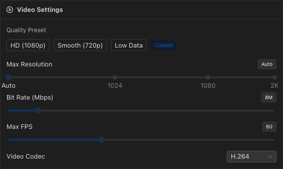
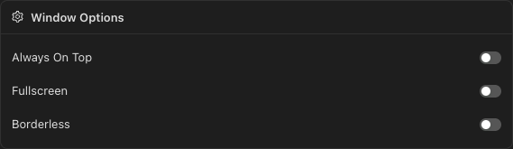
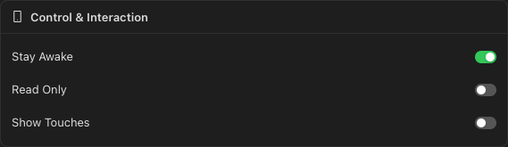
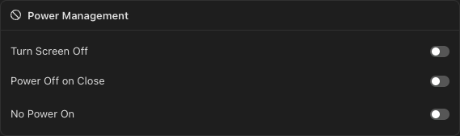

Mirror & Recording
Low-latency screen mirroring powered by scrcpy with full keyboard and mouse control. Record your device screen with configurable quality settings.

Overview
The Mirror view provides real-time screen mirroring for connected Android devices. It uses scrcpy under the hood for high-performance, low-latency video streaming with audio forwarding support.
Real-time Mirroring
Low-latency display with keyboard and mouse control for direct device interaction.
Screen Recording
Record the device screen independently of mirroring, with configurable output paths.
Quality Presets
HD, Smooth, Low Data, or fully custom resolution, bitrate, and framerate.
Per-Device Config
Settings are saved independently for each connected device.
Top Controls
The top bar contains the main action buttons:
- Device Selector — Choose which connected Android device to mirror.
- Start / Stop Mirroring — Toggle the scrcpy mirror session. A live duration timer appears while mirroring is active.
- Take Screenshot — Capture the current device screen and save to a local file.
Recording

Screen recording can be started and stopped independently of the mirroring session. When you click Start Record, a system save dialog prompts you to choose the output file location.
Recording Indicators
- Armed state — "Save dialog will show up" message before recording begins.
- Active recording — Red-bordered panel with a pulsating dot, live duration timer, and the output filename.
Open Recordings Folder
Click the folder icon in the Recording card header to open the recordings directory in your system file manager.
Video Settings
Configure the video stream quality with presets or custom values.
Quality Presets
| Preset | Resolution | Bitrate | FPS |
|---|---|---|---|
| HD | 1920px | 16 Mbps | 60 |
| Smooth | 1280px | 8 Mbps | 60 |
| Low Data | 720px | 4 Mbps | 30 |
| Custom | Shown when values don't match any preset | ||
Custom Settings
| Setting | Range | Default |
|---|---|---|
| Max Resolution | Auto (0) to 2560px | Auto |
| Bit Rate | 1 – 64 Mbps | 8 Mbps |
| Max FPS | 15 – 144 | 60 |
| Video Codec | H.264, H.265, AV1 | H.264 |
Audio Settings
Configure audio forwarding from the device.
| Setting | Options | Default |
|---|---|---|
| Disable Audio | On / Off | Off (audio enabled) |
| Audio Codec | Opus, AAC, FLAC, RAW | Opus |
Window Options
| Setting | Description | Default |
|---|---|---|
| Always On Top | Keep the mirror window above all other windows | Off |
| Fullscreen | Start the mirror window in fullscreen mode | Off |
| Borderless | Remove the window title bar and borders | Off |
Screen Orientation
Force the display orientation of the mirror window:
- Auto — Follow the device's natural orientation.
- Landscape — Force 90-degree landscape mode.
- Portrait — Force portrait mode.
Control & Interaction
| Setting | Description | Default |
|---|---|---|
| Stay Awake | Prevent the device from sleeping while mirroring | On |
| Read Only | Disable keyboard and mouse control (view-only mode) | Off |
| Show Touches | Display touch indicators on the device screen | Off |
Power Management
| Setting | Description | Default |
|---|---|---|
| Turn Screen Off | Turn off the physical device screen while mirroring — saves battery, mirror still shows content | Off |
| Power Off on Close | Turn off the device screen when the mirror session ends | Off |
| No Power On | Prevent scrcpy from waking the device screen when it starts | Off |
Advanced Settings

Fine-tune the mirroring behavior. Click the Refresh button to re-detect available cameras and displays on the device.
| Setting | Options | Default | Notes |
|---|---|---|---|
| Video Source | Display, Camera | Display | Stream the screen or a device camera |
| Camera ID | Default + detected cameras | Default | Only visible when source is Camera |
| Camera Size | Default, 1920x1080, 1280x720, 1024x768, 640x480 | Default | Only visible when source is Camera |
| Display ID | 0 (Main) + detected displays | 0 | Only visible when source is Display |
| Orientation | 0°, 90°, 180°, 270°, Flip 0° | 0° | Fine-grained rotation control |
| Keyboard Mode | SDK, UHID | SDK | UHID emulates a physical USB HID keyboard |
| Mouse Mode | SDK, UHID | SDK | UHID emulates a physical USB HID mouse |
| No Clipboard Sync | On / Off | Off | Disable clipboard sharing between PC and device |
| Show FPS (Logs) | On / Off | Off | Display FPS counter in scrcpy logs |